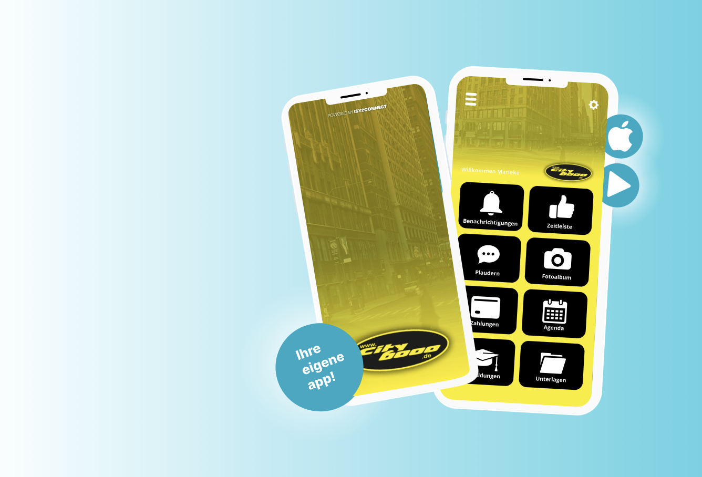
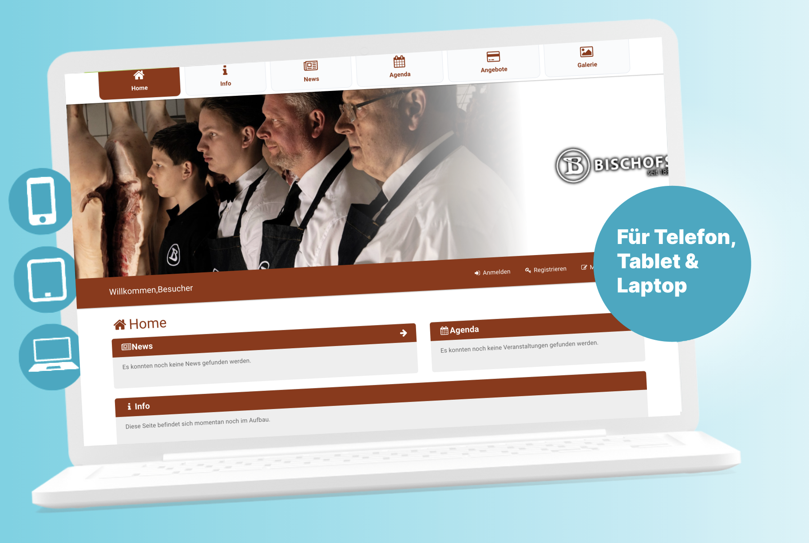

Für Unternehmen, Verbände und andere Organisationen. Wir erstellen Ihre eigene Firmen-App, mit der Sie Ihre Mitarbeiter, Ihr Netzwerk und Ihre Kunden erreichen! Diese kann im Apple oder Google Play Store heruntergeladen werden. Die gesamte Kommunikation erfolgt ab sofort unter einem Dach.
Wir sind davon überzeugt, dass die Zentrierung und Verbesserung von Kommunikation und Information auf ein höheres Niveau gehoben werden kann und sollte. Das führt zu mehr Engagement, Handel, Effizienz und Professionalität für Ihr Unternehmen.
In mehr als zwei Jahrzehnten erfolgreicher Pionierarbeit und des Wissenserwerbs über Kommunikationssysteme und Apps, haben wir eine App für jede Art von Partnerschaft entwickelt.
Welche Funktionen bietet ISY2CONNECT?
Neuigkeiten teilen
Push-Benachrichtigungen verschicken
Gruppen – und Einzelchats
Zahlungsanfragen erstellen
Dokumente publizieren
Gehaltsabrechnungen hochladen
Termine verwalten
Veranstaltungen organisieren
& vieles mehr!!

Alle Infos gebündelt an einer Stelle!
Für Unternehmen, Vereine und andere Organisationen.
Im digitalen Zeitalter ist die Fülle der Kommunikationskanäle oft überwältigend. An dieser Stelle kommt ISY2CONNECT ins Spiel.
Wir haben ein innovatives Kommunikationssystem entwickelt, das alle Ihre Bedürfnisse auf einer Plattform zusammenfasst. Ob Sie nun chatten, Dokumente teilen, Zahlungen tätigen oder ein Ereignis ankündigen wollen.... ISY2CONNECT macht es so einfach wie nie zuvor.
Wir haben ein innovatives Kommunikationssystem entwickelt, das alle Ihre Bedürfnisse in einer nahtlosen Plattform vereint. ISY2CONNECT macht es einfacher denn je.
Verabschieden Sie sich vom überladenen und fragmentierten digitalen Arbeitsplatz. Übernehmen Sie die Kontrolle über Ihre Kommunikation und entdecken Sie, wie ISY2CONNECT Ihren Alltag vereinfachen kann.

Warum sollten Sie sich für ISY2CONNECT entscheiden?
Ihre eigene App für alles
Dezentrale Steuerung über verschiedene Endgeräte möglich
IOS + Andorid + Webapp für Browser
Steigern Sie das Engagement
Verbessern Sie Ihre interne und externe Zusammenarbeit
Optimieren Sie den Kundenservice
Zielgruppen effektiv erreichen
Effektives Kundenbindungs-Instrument
und vieles mehr
Paul Hendrikx - Leiter HR
"ISY2CONNECT hat unser Unternehmen revolutioniert! Alle unsere Prozesse sind jetzt einfach in einer App zu verwalten.
Es hat unsere Effizienz gesteigert, Kosten gespart und unsere Daten geschützt. Außerdem ist es natürlich toll, eine eigene echte App zu haben!"
Cookie-Richtlinie
Diese Website verwendet Cookies. Weitere Informationen über die Art der verwendeten Cookies und das Aktivieren einzelner Cookies finden Sie in den entsprechenden Kategorien. Sie können Ihre Einstellungen jederzeit über den Link im Fußbereich dieser Website anpassen.
.png)